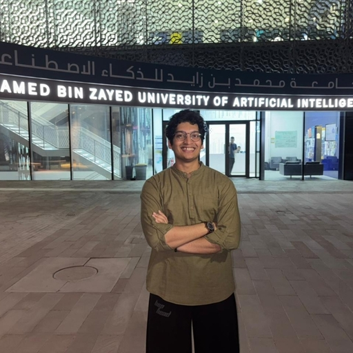
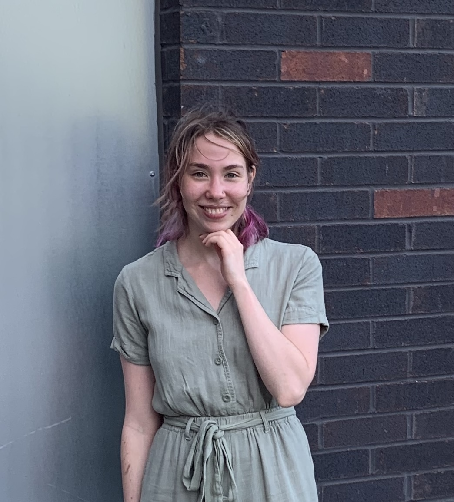

Principal Investigator

Principal Investigator
Trustworthy AI
Agent
Personalization
Graph Mining
Postdoc
Postdoc, MBZUAI
Computer Science
Co-advised with Steve Liu
Since 2026.11
Trustworthy AI
AI for Science
Ph.D. Students
Ph.D. Student, MBZUAI
Statistics and Data Science
Since 2026.08
Trustworthy AI
Model Evaluation
Ph.D. Student, MBZUAI
Statistics and Data Science
Since 2026.08
Personalized AI
Multimodal Agent
Roman Makarov
Ph.D. Student, MBZUAI
Computer Science
Since 2026.08
Diffusion/Flow Models
Uncertainty Quantification
M.S. Students
Symbat Moldakhan
M.S. Student, MBZUAI
Statistics and Data Science
Since 2026.07
Personalization
M.S. Student, MBZUAI
Machine Learning
Co-advised with Zhiqiang Shen
Since 2026.07
Data Distillation

M.S. Student, MBZUAI
Computer Science
Since 2025.08
Mechanistic Interpretability
Syed Arsalaan Nadim
M.S. Student, MBZUAI
Statistics and Data Science
Co-advised with Raul Astudillo
Since 2025.08
AI for Science
Marina Ananyan
M.S. Student, MBZUAI
Statistics and Data Science
Co-advised with Souhaib Ben Taieb
Since 2025.08
Uncertainty Quantification
Alumni
Research Engineer, MBZUAI
2026.03 - 2026.09
Next: Xiaohongshu
Discrete Diffusion Models
Visiting Ph.D. Student, MBZUAI
Ph.D. student, National University of Singapore
2026.02 - 2026.07
Next: Principal Research Scientist, Tencent Hunyuan
LLM
Agent
M.S., University of Rochester
2024.08 - 2025.12
Next: Ph.D. student at MBZUAI
Conformal Prediction

Ph.D. Student, University of Rochester
2024.08 - 2025.01 (Advised by Anson Kahng till 2026.07 due to my leave)
Next: Ph.D. student, Mila (since 2026.08)
Algorithmic Fairness
Personalization